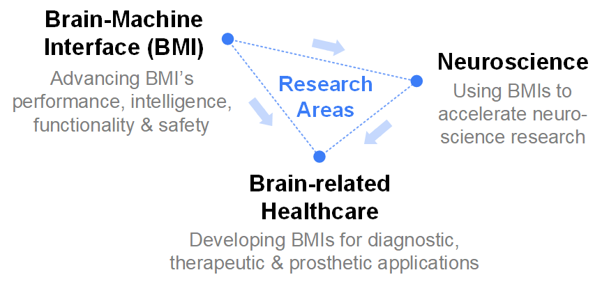
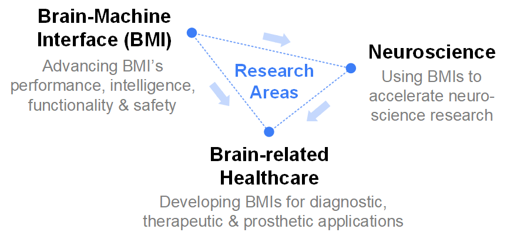
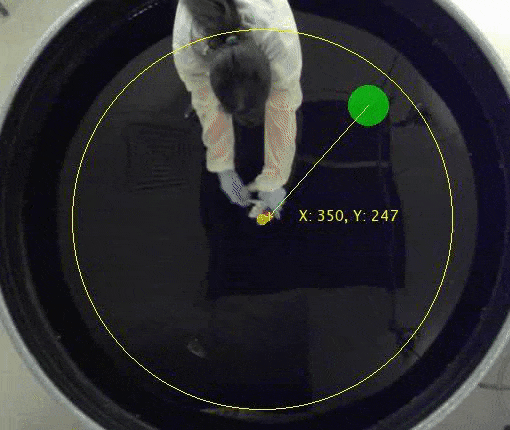
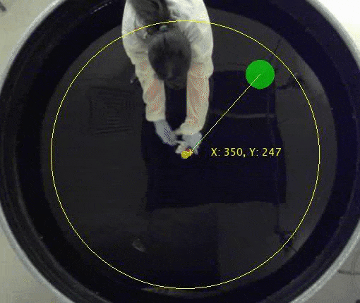

Xilin Liu
My name is Xilin (/'ʃi-lin/). I am currently a Staff Engineer at Qualcomm Inc. I obtained my Ph.D. degree under the supervision of Prof. Jan Van der Spiegel (IEEE Life Fellow) at the University of Pennsylvania (Penn), USA.
My research focuses on integrated circuits (IC) and system design with embedded machine learning for emerging biomedical applications. In particular, I've been developing brain-machine interface (BMI) systems for medical diagnosis and therapies, fundamental neuroscience research, as well as human-machine interaction. My research advances knowledge and techniques in the areas of IC, system, and data science. I am passionate about pushing the boundaries of technologies in enhancing human life quality.
My research outcomes to date include 1 book, 14 journal publications (including Nature Electronics, PNAS, IEEE journals, etc.), 14 conference papers, and 4 U.S. patents. My industrial experience includes contributions to a series of top-tier IC products including the world's first commercial 5G chipset. I have received the IEEE Solid-State Circuit Society (SSCS) 2015-16 Predoctoral Achievement Award. My first author papers have received 3 Best Papers Awards on top conferences. I was also the recipient of the Student-Research Preview Award of the 2014 IEEE International Solid-State Circuits Conference (ISSCC).

 

Research Overview
The human brain is among the most complex and mysterious objects in our known universe. It operates in a fascinating mechanism that we still know very little about. Brain-Machine Interface (BMI) is a technology that creates direct communication pathways between the brain and the external world, which opens the door for us to truly understand and learn from the brain. The field of BMI grows rapidly in recent years, and has shown thrilling advancements and applications in medicine, neuroscience, and engineering.
My research develops electronic BMIs that not only read neural signals from the brain (neural decoding), but also write information back to the brains (neural encoding). Moreover, by integrating real-time signal processing and machine learning on-chip, the developed BMIs are capable of closed-loop neuromodulation and therapeutic intervention. Through close collaboration with neuroscientists, I was among the first to develop bidirectional BMIs for sensorimotor neuromodulation in freely behaving animal models. My work, the PennBMBI, has become a popular benchmark in this emerging area [J10]. With this advantageous BMI paradigm, we have successfully uncovered a number of neuroscience mechanisms in sensorimotor and cognitive processes [J2-8].
A key contribution of my research lies in BMI design for sensory encoding. Although motor decoding and sensory encoding are equally important in nervous systems, BMI researches have been primarily focused on motor decoding. This is partially due to the lack of experimental paradigms and engineering tools in investigating sensory encoding. My research fills this important gap by introducing wireless sensor network and machine-learning based sensory modulation algorithms into the BMI system (Fig. 2). With this new sensory-BMI paradigm, we successfully investigated encoding mechanisms in several animal models with encouraging outcomes. Our experiments, for the first time, show that animals not only can feel the artificially encoded sensory signals, but also can actively adjust the motor strategies to minimize the efforts in extracting the encoded information [J3].

Projects
Project: Learning Active Sensing Strategies using Sensory BMI
Our sensory experience is governed by sensor properties and corresponding motor strategies to sample the environment. Using a brain–machine interface paradigm in rats, we studied how motor strategies are adapted to new sensory inputs to accomplish a difficult searching task. We show that the strategies can be dynamically regulated through experience to optimally extract task-relevant sensory information [J3].

 

Fig. 3 Videos of pre-learning trial without sensory encoding (left), and post-learning trial with sensory encoding by modulated stimulation (right).
Project: Sensory Restoration In Freely Behaving Animals
Having dexterous hands defines human. Unfortunately, stroke, spinal cord injuries, and neurological diseases rob 5.4 million people of this essential human characteristic in the United States. In this project, we develop a fully integrated wireless neuroprosthetic system for continous restoring hand sensation through modulated micro-stimulation in somatosensory cortex and brainstem [J2].
Fig. 4 Developed ICs and systems for sensory encoding experiments in freely behaving monkeys. (a) the custom-designed chronic headstage chamber, (b) the system block diagram of the BMI device, (c) the miniature force sensor based on optical waveguide, and (d) the micrograph of the fabricated IC.
Project: On-the-edge Deep Learning Inference for BMIs
Deep learning has shown great potentials in detecting brain states and neurological disorders. Moreover, on-the-edge inference of deep learning has advantages including low latency, better robustness, and privacy. However, prevailing deep learning models are usually too computationally intensive to be deployed in energy-constrained BMIs. In this project, we overcome this challenge by IC-algorithms co-design. We successfully demonstrated the inference of deep learning models in low-cost microcontrollers for real-time detecting and predicting epileptic seizures.

Fig. 5 A BMI with on-the-edge Inference of a convolutional neural netowrk (CNN) for closed-loop epileptic seizure detection and intervention.
Project: Closed-loop Optogenetic Sleep Modulation
Alzheimer’s disease affects approximately 1.7% of the population in the United States. For people aged 65 and older, the chance increases to 10%. Recent studies have shown that sleep disorder is an important risk factor for Alzheimer’s diseases and other cognitive degradation conditions. In this project, we develop advanced optogenetic* neuromodulation devices for treating sleep disorders and enhancing memory consolidation.*Optogenetics is a technique that uses light to evoke activities of genetically-modified neurons, which is advantageous in sleep modulation since populations with antagonistic control over sleep stages are often spatially intermingled.
Project: Neural Recording with Compressed Sensing and Encryption
Cybersecurity issues have emerged in FDA-approved medical devices. Compromised neural interfacing devices may not only disclose critical health-related information, but also leave the subject vulnerable to life-threatening attacks. However, few investigations have been done in this field, partially due to the disciplinary barriers. In this project, we develop an energy-efficient neural recorder with compressed sensing (CS)* for simultaneous data compression and encryption.*CS is a signal processing technique for sparse signal, which allows a sub-Nyquist sampling with nearly lossless reconstruction. CS operation simultaneously encrypts the data with the sampling matrix being the cryptographic key.
Fig. 6 Illustration of the proposed neural recording system with compressed-sensing based encryption.
Links
Honors and Awards

- Best Student Paper Award (as the 1st author), received on the 50th IEEE International Symposium on Circuits and Systems (ISCAS), 2017
- Pre-doctoral Achievement Award of the IEEE Solid-State Circuit Society (SSCS), received on the 63rd International Solid-State Circuit Conference (ISSCC), 2016
- 1st Place Best Paper Award (as the 1st author) received on the 11th IEEE Biomedical Circuits and Systems Conference (BioCAS), 2015
- ISSCC Student Research Preivew Award (as the 1st author) of the 61st IEEE Solid-State Circuit Conference (ISSCC), 2014
- Best Student Paper Award (as the 1st author), Biomedical track the 47th IEEE International Symposium on Circuits and Systems (ISCAS), 2014
- No. 1 Most Popular Paper among the all articles (since 1952) in IEEE Transactions on Circuits and Systems II: Express Briefs (TCAS-II) listed by IEEE Xplore, Nov. 2017
- Student Travel Grant Award, IEEE Solid-State Circuits Society, 2013
- Travel Grant for Student, IEEE Circuits and Systems Society, 2012
- Ph.D. Fellowship Award, Department of ESE, University of Pennsylvania, 2011
- Excellent Graduation Project (Thesis), Top 1%, Harbin Institute of Technology, 2011
- First-rank People's Scholarship in China, Top 1%
Publications
Book
- [B1] X. Liu and J. Van der Spiegel, "Brain-Machine Interface: Closed-loop Bidirectional System Design", Springer International Publishing AG, ISBN: 978-3319679396, 2018. [DOI]
Journals
- [J1] X. Liu, A. G. Richardson, "Edge deep learning for neural implants: a case study of seizure detection and prediction", Journal of Neural Engineering, no. 18, pp. 046034, April 2021. Impact factor: 4.81 [DOI] [PDF]
- [J2] X. Liu, A. G. Richardson, and J. Van der Spiegel, "An Energy-efficient Compressed Sensing Based Encryption Scheme for Wireless Neural Recording", IEEE Journal on Emerging and Selected Topics in Circuits and Systems (JETCAS), Accepted for publicaiton, April. 2021. Impact factor: 3.43 [DOI] [PDF]
- [J3] M. Zhang, Z. Tang, X. Liu, J. Van der Spiegel, "Electronic Neural Interfaces", Nature Electronics, 3, 191–200, Mar. 2020. Impact factor: 27.5 [DOI] [PDF]
- [J4] X. Liu, H. Zhu, T. Qiu, S. Y. Sritharan, D. Ge, S. Yang, M. Zhang, A. G. Richardson, T. H. Lucas, N. Engheta, and J. Van der Spiegel, "A Fully Integrated Sensor-Brain-Machine Interface System for Restoring Somatosensation", IEEE Sensors Journal, Oct. 2020. Impact factor: 3.073 [DOI] [PDF]
- [J5] A. G. Richardson, Y. Ghenbot, X. Liu, H. Hao, C. Rinehart, S. DeLuccia, S. Torres Maldonado, G. Boyek, M. Zhang, F. Aflatouni, J. Van der Spiegel, and Timothy H. Lucas, "Learning active sensing strategies using a sensory brain–machine interface", Proceedings of the National Academy of Sciences (PNAS), Aug. 2019. Impact factor: 9.58 [DOI] [PDF] [Supplementary Info]
- [J6] X. Liu, M. Zhang, A. G. Richardson, T. H. Lucas, and J. Van der Spiegel, "Design of a Closed-loop, Bi-directional Brain Machine Interface System with Energy Efficient Neural Feature Extraction and PID control", Biomedical Circuits and Systems, IEEE Transactions on (TBioCAS), vol. 11, no. 4, pp. 729-742, Aug. 2017. Impact factor: 4.252 [DOI] [PDF]
- [J7] A. G. Richardson, X. Liu, P. K. Weigand, E. D. Hudgins, J. M. Stein, S. R. Das, A. Proekt, M. B. Kelz, M. Zhang, J. Van der Spiegel, T. H. Lucas. "Hippocampal gamma‐slow oscillation coupling in macaques during sedation and sleep", Hippocampus, Jan. 2017. Impact factor: 3.267 [DOI] [PDF]
- [J8] T. H. Lucas, X. Liu, M. Zhang, S. Sritharan, I. Planell-Mendez, Y. Ghenbot, S. Torres-Maldonado, C. Brandon, J. Van der Spiegel, A. G. Richardson, "Strategies for Autonomous Sensor–Brain Interfaces for Closed-Loop Sensory Reanimation of Paralyzed Limbs", Neurosurgery, vol. 64, pp. 11-20, Sept. 2017. Impact factor: 4.605 [DOI] [PDF]
- [J9] X. Liu, M. Zhang, T. Xiong, A. G. Richardson, T. H. Lucas, P. S. Chin, R. Etienne-Cummings, T. D. Tran, and J. Van der Spiegel, "A Fully Integrated Wireless Compressed Sensing Neural Signal Acquisition System for Chronic Recording and Brain Machine Interface", Biomedical Circuits and Systems, IEEE Transactions on (TBioCAS), vol.10, No.4, August 2016. Impact factor: 4.252 [DOI] [PDF]
- [J10] X. Liu, J. Sacks, M. Zhang, A. G. Richardson, T. H. Lucas, and J. Van der Spiegel, "The Virtual Trackpad: an Electromyography-based, Wireless, Real-time, Low-Power, Embedded Hand Gesture Recognition System using an Event-driven Artificial Neural Network", IEEE Transactions on Circuits and Systems II: Express Briefs (TCAS-II), Dec. 2016. Impact factor: 3.25 [DOI] [PDF]
- [J11] A. G. Richardson, M. A. Attiaha, J. I. Bermanb, H. I. Chena, X. Liu, M. Zhang, J. Van der Spiegel, T.H. Lucas, "The effects of acute cortical somatosensory deafferentation on grip force control", Cortex, vol. 74, pp. 1-8, Jan. 2016. Impact factor: 4.275 [DOI] [PDF]
- [J12] X. Liu, M. Zhang, B. Subei, A. G. Richardson, T. H. Lucas, and J. Van der Spiegel, "The PennBMBI: Design of a General Purpose Wireless Brain-Machine-Brain Interface System", Biomedical Circuits and System, IEEE Transaction on (TBioCAS), vol. 9, no. 2, pp. 248-258, 2015. Impact factor: 4.252 [DOI] [PDF]
- [J13] X. Liu, M. Zhang, J. Van der Spiegel, "A Low-Power Multifunctional CMOS Sensor Node for an Electronic Facade", IEEE Transactions on Circuits and Systems I: Regular Papers (TCAS-I), vol.61, no.9, pp.2550-2559, Sept. 2014. Impact factor: 3.934 [DOI] [PDF]
- [J14] X. Wu, X. Liu, M. Zhang, J. Van der Spiegel, "Current Mode Image Sensor With Improved Linearity and Fixed Pattern Noise", IEEE Transactions on Circuits and Systems I: Regular Papers (TCAS-I), vol.61, no.6, pp.1666-1674, June 2014. Impact factor: 3.934 [DOI] [PDF]
Conferences
- X. Liu, and A. G. Richardson, "A System-on-Chip for Closed-loop Optogenetic Sleep Modulation", Accepted for publication, EMBC, Nov. 2021.
- X. Liu, H. Zhu, M. Zhang, X. Wu, A. G. Richardson, S. Y. Sritharan, D. Ge, Y. Shu, T. H. Lucas, and J. Van der Spiegel, "A Fully Integrated Wireless Sensor-Brain Interface System to Restore Finger Sensation", Circuits and Systems, IEEE International Symposium on (ISCAS), May 2017. Best Student Paper Award, Best Track Award [DOI] [PDF]
- X. Liu, M. Zhang, A. G. Richardson, T. H. Lucas, and J. Van der Spiegel, "A 12-Channel Bidirectional Neural Interface Chip with Integrated Channel-level Feature Extraction and PID Controller", IEEE Biomedical Circuits and Systems Conference (BioCAS), Oct. 2015. Best Paper Award [DOI] [PDF]
- X. Liu, B. Subei, M. Zhang, A. G. Richardson, T. H. Lucas, and J. Van der Spiegel, "The PennBMBI: A general purpose wireless Brain-Machine-Brain Interface system for unrestrained animals," Circuits and Systems, 2014 IEEE International Symposium on (ISCAS), Jun. 2014. Best Paper Award [DOI] [PDF]
- W. Chen, X. Liu, B. Litt, "Logistic-weighted regression improves decoding of finger flexion from electrocorticographic signals", International Conference of the IEEE Engineering in Medicine and Biology Society (EMBC), Aug. 2014. [DOI] [PDF]
- X. Liu, M. Zhang, and J. Van der Spiegel, "A low power multi-mode CMOS image sensor with integrated on-chip motion detection," Circuits and Systems (ISCAS), 2013 IEEE International Symposium on, pp. 2416-2419, May 19-23, 2013. [DOI] [PDF]
- Y. Ghenbot, X. Liu, H. Hao, C. Rinehart, S. Deluccia, S. T. Maldonado, G. Boyek, M. Zhang, F. Aflatouni, J. Van der Spiegel, T. H. Lucas, A. G. Richardson, "Goal-Directed BCI Feedback Using Cortical Microstimulation", Brain-Computer Interface Research, 2020.
- X. Liu, M. Zhang, H. Hao, A. G. Richardson, T. H. Lucas, and J. Van der Spiegel, "Wireless Sensor Brain Machine Interfaces for Closed-loop Neuroscience Studies," IEEE International Conference on ASIC (ASICON), Oct 2019.
- J. Van der Spiegel, M. Zhang, and X. Liu, "The next-generation brain machine interface system for neuroscience research and neuroprosthetics development", IEEE International Conference on ASIC (ASICON), 2017. Invited keynote
- S. Sritharan, A. Richardson, P. Weigand, I. Planell-Mendez, X. Liu, H. Zhu, M. Zhang, J. Van der Spiegel, T. Lucas, "Somatosensory Encoding with Cuneate Nucleus Microstimulation: Detection of Artificial Stimuli", International Conference of the IEEE Engineering in Medicine and Biology Society (EMBC), 2016.
- J. Van der Spiegel, M. Zhang, X. Liu, "System-on-a-chip Brain-Machine-Interface design-a review and perspective", IEEE International Conference on Solid-State and Integrated Circuit Technology (ICSICT), Oct. 2016. Invited talk
- X. Liu, M. Zhang, H. Sun, A. G. Richardson, T. H. Lucas, and J. Van der Spiegel, "Design of a Net-Zero Charge Neural Stimulator with Feedback Control," 2014 IEEE Biomedical Circuits and Systems Conference (BioCAS), Oct. 2014.
- X. Liu, M. Zhang, and J. Van der Spiegel, "A low power multi-mode CMOS image sensor with integrated on-chip motion detection," Circuits and Systems, IEEE International Symposium on (ISCAS), pp. 2416-2419, May 19-23, 2013.
Patents/Invention Disclosures
- X. Liu, P. Mahoudidarayan, N. Rashidi, S. M. Taleie, and D. Seo, "Mismatch and Timing Correction Technique for Mixing-mode DACs", Qualcomm Technologies Inc., Patent Application, 2020.
- X. Liu, N. Saputra, B. Sedighi, A. Swaminathan, D. Seo, "Adaptive Biasing Scheme for DAC Performance Enhancement", Qualcomm Technologies, Inc. Patent Application, 2020.
- S. Yang, A. Wei, N. Saputra, X. Liu, "Stacked Switch for High Speed Current Steering Digital-to-Analog Converters", Qualcomm Technologies, Inc. Patent Application, 2020.
- S. M. Taleie, ..., X. Liu, "Time-Interleave DAC Image Calibration Scheme", Qualcomm Technologies, Inc., US Patent 10,516,412, 2019.
Academic Services
- Journal Reviewer
IEEE Journal of Solid-State Circuits (JSSC)
Journal of Neural Engineering
IEEE Internet of Things Journal (IoT)
IEEE Transactions on Biomedical Circuits and Systems (TBioCAS)
IEEE Sensors Journal
IEEE Transactions on Circuits and Systems I: Regular Papers (TCAS-I)
IEEE Transactions on Circuits and Systems II: Express Briefs (TCAS-II)
Frontiers in Neuroscience
Cognitive Neurodynamics
- Technical Program/Review Committee Member
IEEE International Symposium on Circuits and Systems (ISCAS)
IEEE Biomedical Circuits and Systems Conference (BioCAS)
IEEE International Midwest Symposium on Circuits and Systems (MWSCAS)
IEEE International System-on-Chip Conference (SOCC)
IEEE Computer Society Annual Symposium on VLSI (ISVLSI)
Team
I've worked with a large group of brilliant people. That's almost all that I need to say.

Misc
Besides research, I love traditional Chinese calligraphy and I have been practicing since when I was five. I've won multiple national awards and held a solo exhibition of my works in 2011 (@Harbin, China).

I am also an amateur photographer and I love traveling.